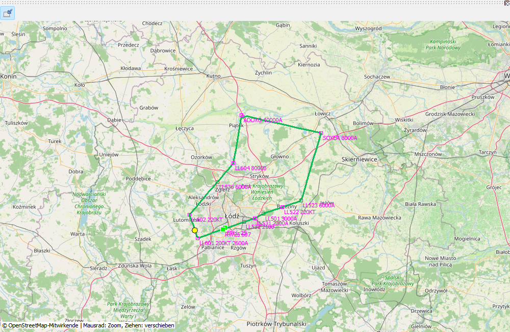

OpenStreetMap ordnet Positionen dem Gelände zu. Die Spur enthält Messungen, Magenta den Plan. Überlappende Abschnitte brauchen keine doppelte Linie; Punkte und Einschränkungen bleiben sichtbar. Verbindungslinien sind keine metergenaue Messung.
Die Beispielrunde führt von EPLL 25 über ADOX2W, ADOXO, SOXER, SOXE2T und LL501 zum ILS Z 25. Punkte illustrieren die Funktion und ersetzen keine aktuellen Karten. Ziehen verschiebt, Mausrad zoomt, Einpassen stellt die Ausdehnung wieder her. Neue Kacheln benötigen Netz.
Tatsächliche Spur sind gemessene Positionen; Magenta ist der gespeicherte Plan.
| Option / Aktion | Verhalten und Einschränkungen |
|---|---|
| Navigation | Ziehen verschiebt, Mausrad/Tasten zoomen, Anpassen rahmt Daten ein. Übersicht zeigt Bibliotheksrouten. |
| Kacheln | Online-Hintergrund umschalten. Cache kann offline funktionieren; fehlender Hintergrund bedeutet nicht fehlendes GPS. |
| Plan | Wegpunktnamen und vorhandene Einschränkungen; deckungsgleiche Abschnitte ohne doppelte Linie. |
| Verfahren | SID/STAR/Anflug nach EFB-Auflösung gespeichert. Fehlanflüge dunkelgrau; Holdings mit Parametern und schematischen Symbolen. |
| Nur Koordinaten | Passender SimBrief-Plan kann bei AIRAC-Abweichung Namen ergänzen, aktualisiert aber keine Navigationsdatenbank. |
| Export | PNG ist eine Abbildung, KML eine Spur für andere Programme; kein Ersatz für .mfzr. |
